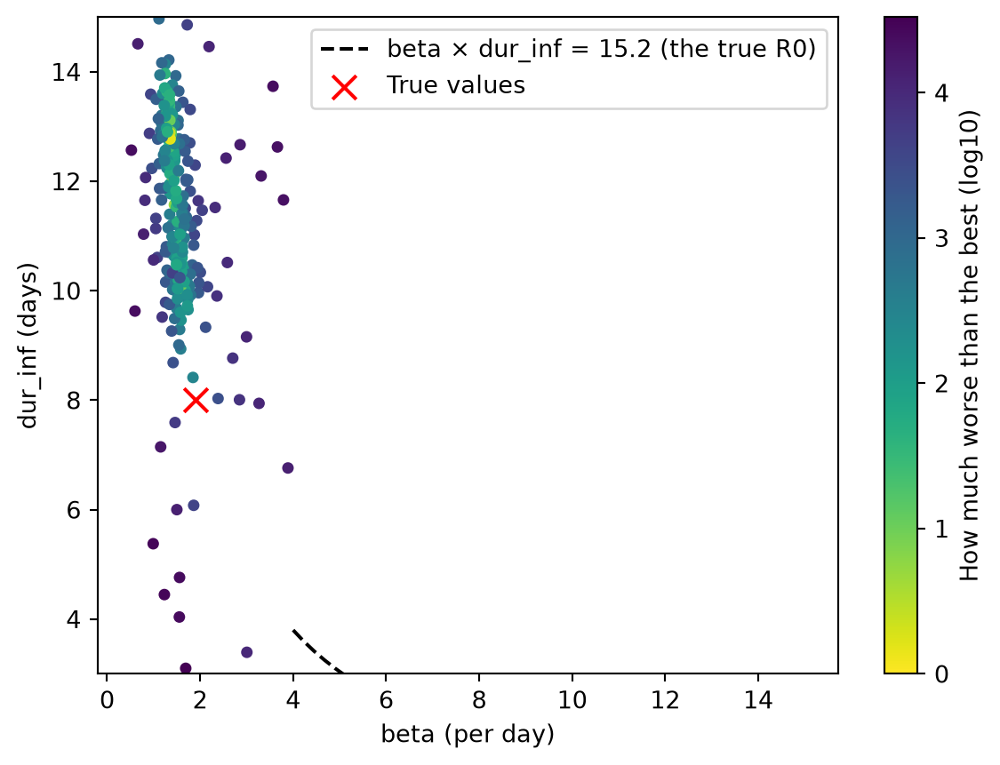

import starsim as ss
S, E, I, R = ss.states('S E I R')
beta = ss.par(1.5, bounds=[0.5, 4]) # Transmission rate per day
dur_inf = ss.par(ss.days(6), bounds=[3, 15]) # Infectious period, in days
report = ss.par(0.3, bounds=[0.05, 1]) # Share of cases reported
infection = S >> E @ beta*I
onset = E >> I @ ss.days(10)
recovery = I >> R @ dur_inf
cases = ss.outcome(report*onset, likelihood=ss.poisson())
measles = ss.Disease(infection, onset, recovery, cases, init=dict(I=0.0001, R=0.9))
pars = dict(total_pop=100_000, start='2025-01-01', stop='2026-01-01')Parameter identification
A parameter is identifiable if the data determine its value. A fit always returns some value for each parameter, but that value is only meaningful if the data could not equally well be explained by quite different values. There are two ways this can fail:
- Structurally: the model itself can’t tell two parameters apart, whatever the data. If transmission depends only on the product of the number of contacts and the chance of infection per contact, any pair with the same product fits equally well.
- Practically: the model could in principle tell them apart, but these data can’t, because there is too little of it, it is too noisy, or it doesn’t cover the part of the epidemic that would show the difference.
The way to check is to fit data for which the right answer is known: data made from the model itself, with known values. If the fit doesn’t recover those values, it won’t recover the truth from real data either. This page shows that check, and what the fit tells you when identification fails. It assumes the basics of Fitting a model.
Recovering known values
The model is a measles outbreak in a town of 100,000, 90% of whom are immune, with three unknowns: the transmission rate beta, how long people stay infectious, dur_inf, and the share of cases that are reported, report. The reported cases are counts, so their likelihood is a Poisson:
The data are a year of weekly reported cases, drawn from a run with beta = 1.9, dur_inf = 8 days, and report = 0.5. The true sim has its own random seed, so its noise is not shared with any run being fitted:
true_values = dict(beta=1.9, dur_inf=ss.days(8), report=0.5)
truth = ss.Sim(measles, pars=true_values, rand_seed=2, **pars)
truth.run()
data = truth.to_data('cases', resample='week')
sim = ss.Sim(measles, data=data, **pars)
fit = sim.fit()Sim: measles, 100,000 people, as an ODE, 2025-01-01 to 2026-01-01
measles: R0 = 15.2 (R = 1.52 at the start, with 10% susceptible), with 10 infectious at the start
Done in 0.004 s; measles: 5,856 infections; at most 298 infectious, on 2025-08-05
Using the likelihood: the sum of the log-likelihoods of cases, treated as independent
Searching on a log scale: report
Fitting by l-bfgs-b (gradients by automatic differentiation; for a posterior, method="nuts"; override with method=)
Compiling the run with JAX, estimated time: 0.2-5 s
Compiling the gradient of the log-likelihood with JAX, estimated time: 0.5-5 s
Compiling the gradient with JAX, estimated time: 0.2-5 s
Converged: the best two of 3 searches, from points of the scan that are apart, ended within 0.1 of each other (objective values 165.8 at beta=1.911, dur_inf=7.941, report=0.4979; 165.8 at beta=1.911, dur_inf=7.942, report=0.4979; 165.8 at beta=1.911, dur_inf=7.941, report=0.4979; 125 evaluations)
The negative log-likelihood is 165.8 at the best values and 1.328e+04 at the initial valuesAdding the true values to the fit’s table makes the comparison easy:
table = fit.table.copy()
table['true'] = [1.9, 8, 0.5]
table| par | initial | best | low | high | true | |
|---|---|---|---|---|---|---|
| 0 | beta | 1.5 | 1.911429 | 0.50 | 4.0 | 1.9 |
| 1 | dur_inf | 6.0 | 7.941496 | 3.00 | 15.0 | 8.0 |
| 2 | report | 0.3 | 0.497884 | 0.05 | 1.0 | 0.5 |
All three are recovered closely. With a full year of data from a deterministic model, the shape of the epidemic, including how fast it rose, when it peaked, and how many people it reached, is enough to separate them.
Which combinations the data determine
A best fit is a single point; it doesn’t show how far the values could move and still fit nearly as well. One way to see that is to look at many values and how well each fits. A search by Optuna (method='optuna') spreads its trials widely before it narrows down, and each trial is kept, with its score, in fit.to_df():
search = sim.fit(method='optuna', n_trials=300, rand_seed=1, verbose=False)
trials = search.to_df()
trials.sort_values('objective').head()| beta | dur_inf | report | objective | |
|---|---|---|---|---|
| 224 | 1.410594 | 12.081899 | 0.434624 | 172.751401 |
| 296 | 1.355058 | 12.772928 | 0.421154 | 173.301883 |
| 266 | 1.353538 | 12.821957 | 0.414266 | 173.627941 |
| 292 | 1.343233 | 12.882188 | 0.415055 | 173.792577 |
| 293 | 1.342854 | 12.882770 | 0.414077 | 173.924883 |
Plotting beta against dur_inf for each trial, colored by how much worse its negative log-likelihood is than the best:
import numpy as np
import matplotlib.pyplot as plt
worse = np.log10(1 + trials.objective - trials.objective.min()) # 0 at the best trial
fig, ax = plt.subplots()
points = ax.scatter(trials.beta, trials.dur_inf, c=worse, cmap='viridis_r', s=15)
d = np.linspace(4, 15, 50)
ax.plot(d, 1.9*8/d, 'k--', label='beta × dur_inf = 15.2 (the true R0)')
ax.scatter(1.9, 8, marker='x', s=100, color='red', zorder=10, label='True values')
ax.set_xlabel('beta (per day)')
ax.set_ylabel('dur_inf (days)')
ax.set_ylim(3, 15)
plt.colorbar(points, ax=ax, label='How much worse than the best (log10)')
ax.legend();
The good fits lie along a curve on which β × the infectious period, the basic reproduction number R0, stays about the same. The data determine R0 well: it sets how many people the outbreak reaches. They determine β and the infectious period separately much less well, through the timing of the epidemic alone. This is a practical limit, not a structural one: the full data still pick out the right point on the curve, but a little more noise, or less data, and they wouldn’t.
Less data
Suppose the outbreak is being fitted while it is still growing: 16 weeks of data, before the peak. Early growth is set by the rate at which the epidemic grows, which many combinations of β and the infectious period give:
early = sim.fit(data=data.iloc[:16], method='nelder-mead')
early.tableUsing the likelihood: the sum of the log-likelihoods of cases, treated as independent
Searching on a log scale: report
Not converged: the 3 searches, from points of the scan that are apart, ended at different objective values (41.19 at beta=1.195, dur_inf=15, report=0.5946; 48.67 at beta=3.4, dur_inf=5.017, report=0.1253; 59.11 at beta=4, dur_inf=5.04, report=0.05; 1414 evaluations), so the best may be a local optimum; try a larger scan (scan=) or more searches (restarts=)
The negative log-likelihood is 41.19 at the best values and 564 at the initial values/home/cliffk/idm/ssv4/starsim/fit.py:2114: AtBound:
the best-fit value of "dur_inf" (15) is at one of its bounds [3, 15]; consider widening them
| par | initial | best | low | high | |
|---|---|---|---|---|---|
| 0 | beta | 1.5 | 1.194978 | 0.50 | 4.0 |
| 1 | dur_inf | 6.0 | 15.000000 | 3.00 | 15.0 |
| 2 | report | 0.3 | 0.594601 | 0.05 | 1.0 |
The fit shows the problem in three ways. The searches from different starting points end at different values and different scores, so it reports that it did not converge; the infectious period ends at its upper bound (with an AtBound warning), which here doesn’t mean the true value is beyond the bound, only that nothing in the data stops it from going there; and the values are far from the truth. Wider bounds would not help. What helps is more information: more data, data of another kind (such as a serosurvey of who was infected), or fixing a parameter that is known from elsewhere. Measles’ infectious period is well known, so in practice it would be fixed rather than fitted:
early_fixed = sim.fit(data=data.iloc[:16], pars=['beta', 'report'], verbose=False)
early_fixed.table| par | initial | best | low | high | |
|---|---|---|---|---|---|
| 0 | beta | 1.5 | 2.504620 | 0.50 | 4.0 |
| 1 | report | 0.3 | 0.394952 | 0.05 | 1.0 |
With dur_inf fixed (at 6 days, its value in the model, which is wrong), β and the share reported are determined, but β is biased to make up for the wrong infectious period. Fixing a parameter moves its uncertainty into the others, so fix only what is known.
Parameters that appear only together
Some models can’t separate two parameters whatever the data. Here transmission is written as the number of contacts a day times the chance of infection per contact, and both are fitted:
contacts = ss.par(10, bounds=[2, 30]) # Contacts per day
p_infect = ss.par(0.1, bounds=[0.01, 0.5]) # Chance of infection per contact
S, E, I, R = ss.states('S E I R')
infection = S >> E @ contacts*p_infect*I
onset = E >> I @ ss.days(10)
cases = ss.outcome(0.5*onset)
measles2 = ss.Disease(infection, onset, I >> R @ ss.days(8), cases, init=dict(I=0.0001, R=0.9))
fit2 = ss.Sim(measles2, data=data, **pars).fit()Searching on a log scale: contacts, p_infect
Fitting by nelder-mead (2 fitted parameters, for which it is faster than gradients; override with method=)
Note: "contacts" and "p_infect" appear in the model only multiplied together, so the data can determine only their product (1.9), not each of them; fit one and fix the other
Converged: the best two of 3 searches, from points of the scan that are apart, ended within 9.7e-05 of each other (objective values 0.09673 at contacts=13.07, p_infect=0.145; 0.09673 at contacts=20.52, p_infect=0.09237; 0.09674 at contacts=30, p_infect=0.06319; 239 evaluations)
The goodness of fit is 0.09673 at the best values and 0.9933 at the initial valuesThe fit converges, since every search reaches the same best score, but at different values; Starsim notes that the two parameters appear only multiplied together, so the data determine only their product (here 1.9, the true β). The remedy is to fit one and fix the other, or to write the model with their product as one parameter.
Noise in the data
Even when the parameters are identifiable, a real epidemic is one realization of a chance process, and a different realization would give somewhat different estimates. To see how much, make several data sets from a stochastic version of the model (a chain binomial, solver='binomial'), each with its own seed, and fit each one with the deterministic model. Here the infectious period is fixed at its true value, 8 days, and β and the share reported are fitted:
import pandas as pd
known = ss.Sim(measles, pars=dict(dur_inf=ss.days(8)), **pars) # The infectious period fixed at its true value
rows = []
for seed in range(1, 7):
epidemic = ss.Sim(measles, pars=true_values, solver='binomial', rand_seed=seed, verbose=0, **pars).run()
epidemic_data = epidemic.to_data('cases', resample='week', seed=seed)
est = known.fit(data=epidemic_data, pars=['beta', 'report'], verbose=False)
rows.append(dict(seed=seed, total_cases=epidemic_data.cases.sum(), beta=est.pars.beta, report=est.pars.report))
pd.DataFrame(rows).round(3)| seed | total_cases | beta | report | |
|---|---|---|---|---|
| 0 | 1 | 2947 | 1.871 | 0.523 |
| 1 | 2 | 2835 | 1.827 | 0.533 |
| 2 | 3 | 2931 | 1.885 | 0.511 |
| 3 | 4 | 3096 | 2.016 | 0.481 |
| 4 | 5 | 2987 | 1.925 | 0.500 |
| 5 | 6 | 3172 | 1.986 | 0.504 |
Each epidemic is a little different (the total number of reported cases ranges from about 2,800 to 3,200), and so is each estimate: β from about 1.8 to 2.0, against a true 1.9, and the share reported from about 0.48 to 0.53, against 0.5. This spread is how precisely one outbreak of this size can determine the parameters. A small outbreak, or one that dies out early by chance, leaves much less to go on. A posterior gives this uncertainty from a single data set; see Gradients.
Summary
| Sign | Likely cause | What to do |
|---|---|---|
| A note that two parameters appear only together | Structural: only their product (or ratio) matters | Fit one and fix the other, or use their product as one parameter |
| A note that two parameters are almost perfectly correlated in the posterior | Practical: the data determine a combination | More data, or data of another kind; or fix one from other evidence |
| Searches from different starts end at different values with similar scores | A ridge or a flat region | As above; look at the trials, or a profile likelihood |
| A best value at a bound | The data don’t constrain it, or the bounds are too narrow | Check the trials; widen the bounds only if larger values are plausible |
| Estimates from known data far from the truth | Too little data, or the wrong data | Recover known values before fitting real data |
Starsim notes the first two cases itself. To draw values from the priors of the parameters (or uniformly over their bounds) and run the model for each, for a Bayesian workflow of your own, use ss.parallel(sim, priors=True, n_runs=200). Fit diagnostics covers the other checks to make after a fit, and Gradients the profile likelihood, which shows how well the data determine one parameter at a time.
Further reading
- pomp: Getting started: likelihood-based inference for epidemic models, including profiles
- Stan: Problematic posteriors: ridges and non-identified parameters in a posterior, and what to do about them